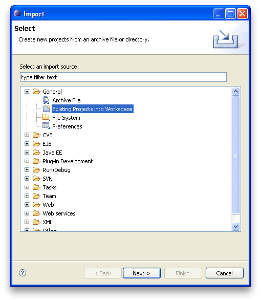
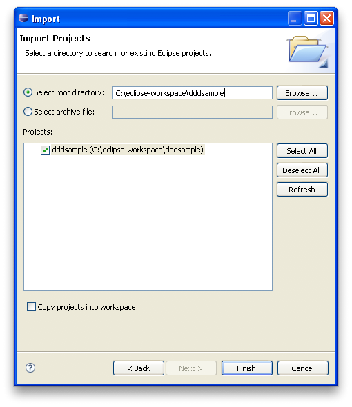
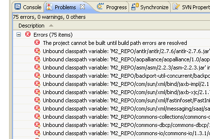
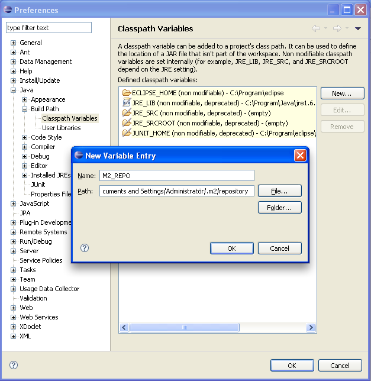

There is a screencast available on the project site that demonstrates how the different interfaces are used.
An RMI registry will be started on port 1099, in addition to the Jetty container on port 8080, so those ports need to be available or you have to reconfigure the application.
This is a simple, standalone Swing client that's used for registering handling events. It communicates with the core application via a Web Service interface. Unpack and run:
cd IncidentLoggingApplication
java -jar IncidentLoggingApplication.jar
NOTE: before you start the Incident Logging Application, the core application must be running on the WSDL URL host in the file app.properties, which defaults to localhost:8080. Edit this file to point at the host where the core application is running.
The source code for this application is currently only available in Subversion.
IDE Setup
IntelliJ 7 or later:
Maven support is integrated - simply open project using the pom.xml.
Netbeans 6 or later:
Install the Maven plugin (Tools - Plugins - Available Plugins), then open project (it will appear as a project directory).
Eclipse
Eclipse embedded support for Maven is still a bit rocky in our experience, so these are instructions for generating Eclipse project descriptor files using external Maven.
Unpack the source package, cd into the dddsample directory (where the pom.xml file is located) and run the following command:
mvn eclipse:eclipse
This will download all external library dependencies and plugins, and will take about 5-10 minutes to complete depending on you network conditions. It will also generate the files .project and .classpath, which are Eclipse project descriptor files. When that process is done, you can open Eclipse and select File - Import, General - Existing projects into workspace:

As project root directory, select the unpacked dddsample directory:

Now the project is up and running, except that all library references are relative to the M2_REPO classpath variable, so you will see a large list of unresolved references:

To define that variable, go to Window - Preferences, Java - Build Path - Classpath variables, New. Set the name to M2_REPO and use the Folder button to browse to the correct location, which is:
Windows
C: Documents and Settings <Username> .m2 repository
Mac
/Users/Username/.m2/repository
Unix
/home/Username/.m2/repository

You should be promted to do a full project rebuild. Select yes. Now the project should compile and you can right-click on the src/test/java folder and do a "Run as/JUnit Test".
About Maven
Maven downloads all external library dependencies and plugins separately, which can amount to quite a large number of small files that are downloaded sequentially. These are all cached locally, but the first time you run it you should be prepared to wait 5-10 minutes for the build to complete, depending on your network conditions.
A good way to get going is to execute the following command, and then go grab a cup of coffee:
mvn clean package jetty:run
That will fill your local cache with most of what you need for development, in a one shot.